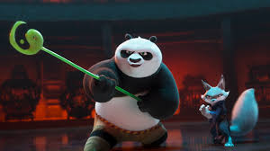
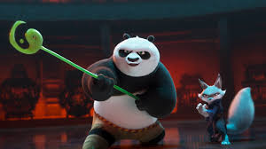

Introduzione
Kung Fu Panda è un film d'animazione prodotto da DreamWorks Animation e rilasciato nel 2008. Diretto da Mark Osborne e John Stevenson, il film racconta la storia di Po, un panda goffo e appassionato di kung fu, che inaspettatamente viene scelto come il leggendario Guerriero Dragone destinato a proteggere la Valle della Pace. Grazie alla sua comicità, alla qualità dell'animazione e ai combattimenti spettacolari, Kung Fu Panda è diventato uno dei franchise di maggior successo della DreamWorks.
Trama
Po è un panda che lavora nel ristorante di noodles del padre, ma sogna di diventare un maestro di kung fu. La sua vita cambia quando il saggio maestro Oogway lo sceglie come Guerriero Dragone, destinato a sconfiggere il temibile Tai Lung, un potente leopardo delle nevi. Nonostante la sua goffaggine, Po si allena sotto la guida del maestro Shifu e con il sostegno dei Cinque Cicloni: Tigre, Scimmia, Vipera, Gru e Mantide.
Durante l’addestramento, Po scopre il valore della fiducia in sé stesso e il potere di trasformare le sue debolezze in punti di forza. Alla fine, riesce a sconfiggere Tai Lung, salvando la Valle della Pace e diventando un vero eroe.
Personaggi Principali
- Po: Il protagonista, un panda entusiasta di kung fu che scopre di essere il Guerriero Dragone.
- Shifu: Il maestro di kung fu che inizialmente non crede in Po ma finisce per guidarlo nel suo percorso di crescita.
- Maestro Oogway: Una saggia tartaruga e il più anziano dei maestri, che sceglie Po come Guerriero Dragone.
- Tigre: La più forte e disciplinata dei Cinque Cicloni, inizialmente scettica ma alla fine solidale con Po.
- Tai Lung: Il principale antagonista del film, un leopardo delle nevi ex-allievo di Shifu, che vuole il potere del Guerriero Dragone.
Curiosità
Kung Fu Panda ha riscosso un enorme successo sia in Occidente che in Cina, grazie alla sua rappresentazione rispettosa delle arti marziali e della cultura cinese. Il film ha ricevuto numerosi premi ed è stato seguito da due sequel principali: Kung Fu Panda 2 (2011) e Kung Fu Panda 3 (2016).
La serie ha portato anche alla creazione di diverse serie animate e speciali televisivi, espandendo l'universo di Po e dei suoi amici. Inoltre, Kung Fu Panda è diventato popolare per i suoi messaggi positivi sulla crescita personale, l'accettazione di sé stessi e la ricerca del proprio destino.